Manuel complet de la plateforme : inscription des candidats, entraînement, concours de sélection chronométré, classement automatique et administration.
« Observez bien… la logique est partout ! »
S'inscrire, s'entraîner, passer le concours, consulter ses résultats et son classement.
Piloter les concours, les questions, les candidats, les contenus et les exports Excel.
Ce que propose l'application et à quoi ressemble sa page d'accueil
Ce guide couvre les deux façons d'utiliser la plateforme du Concours National de Logique. Chaque explication est accompagnée d'une capture de l'écran correspondant.
Lisez le chapitre 2. Vous y trouverez tout le parcours, de la création du compte au certificat de participation.
Lisez le chapitre 3. Il détaille la gestion des concours, des questions, des candidats et des contenus.
L'espace d'administration n'est visible que par les comptes disposant du rôle
administrateur. Un candidat qui tenterait d'ouvrir une adresse commençant par
/admin est automatiquement renvoyé vers son espace personnel.
C'est la première page que voit un visiteur. Elle présente le concours, met en avant l'inscription et donne accès à toutes les informations publiques.
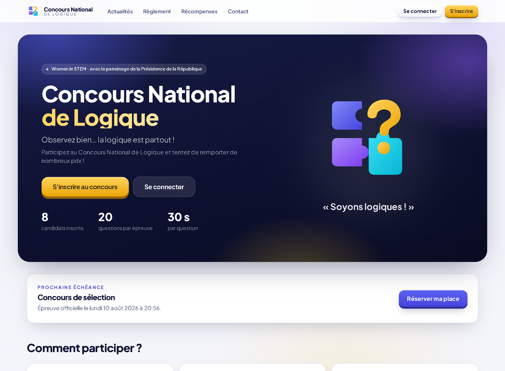
On y trouve, de haut en bas :
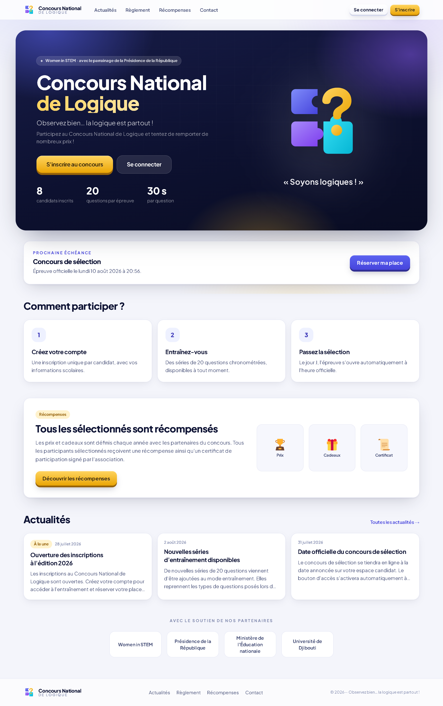
Quatre pages publiques complètent l'accueil. Leur contenu est modifiable à tout moment depuis l'administration, sans intervention technique.
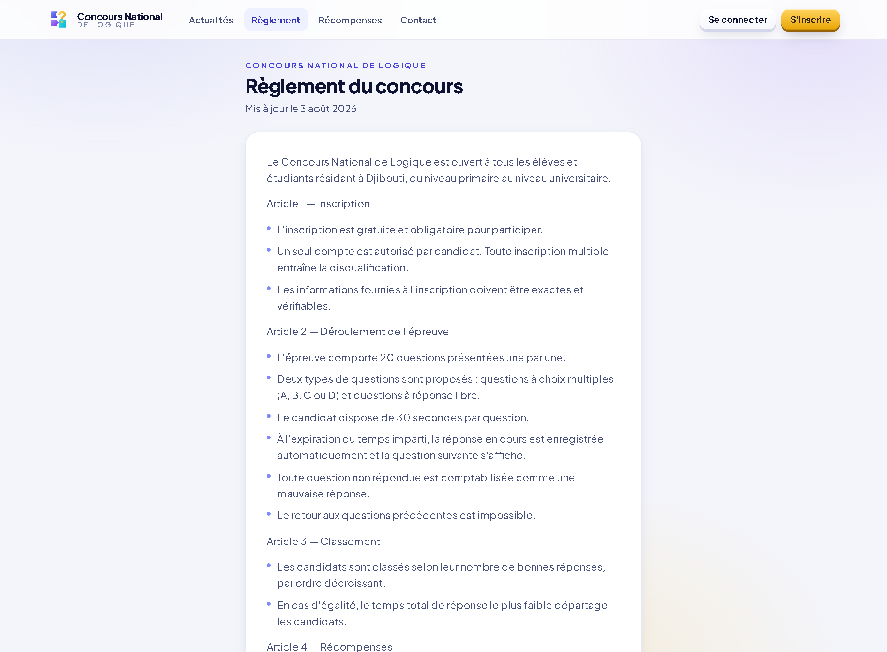
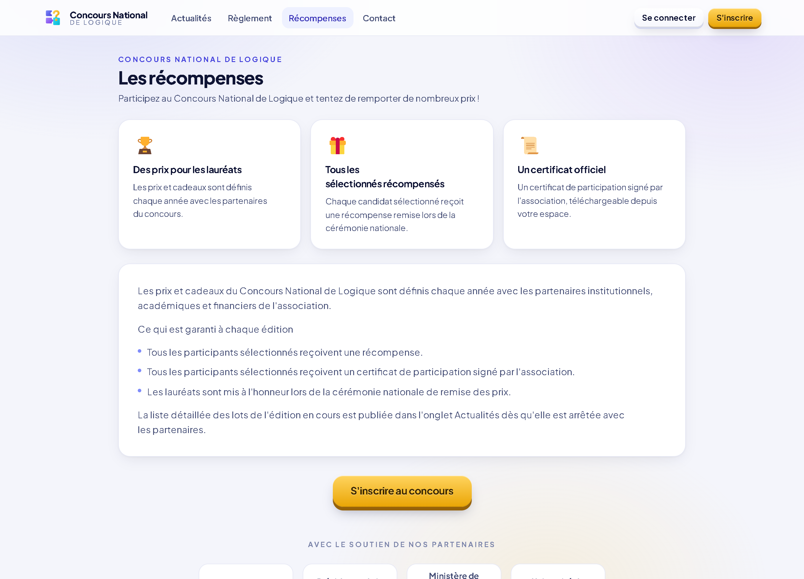
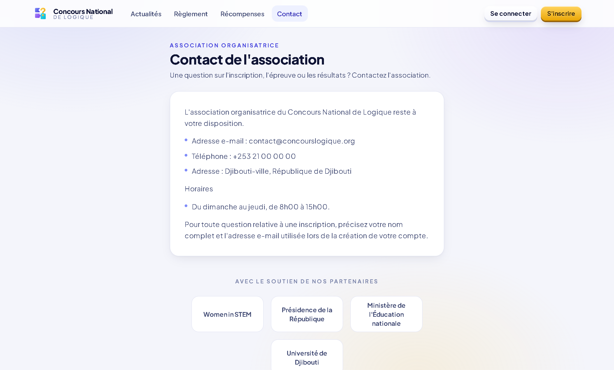
De la création du compte au certificat de participation
L'inscription est obligatoire et gratuite. Elle précède l'accès à l'entraînement comme au concours de sélection.
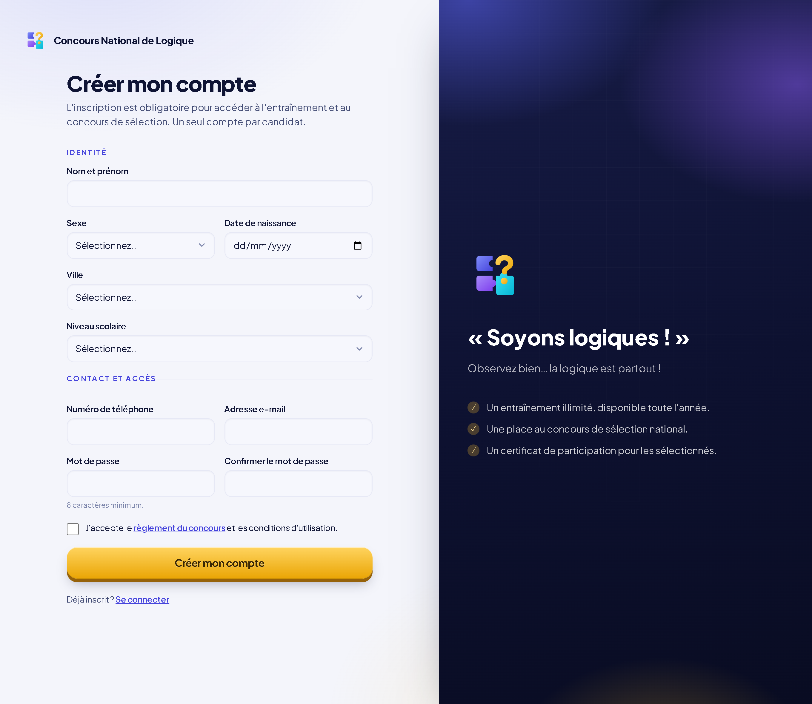
| Champ | Précisions |
|---|---|
| Nom et prénom | Tel qu'il figurera sur le certificat de participation. |
| Sexe | Masculin ou Féminin. |
| Date de naissance | Une date passée ; le calendrier du téléphone facilite la saisie. |
| Ville | Djibouti-ville, Tadjourah, Dikhil, Arta ou Ali Sabieh. |
| Niveau scolaire | Primaire, Collège, Lycée, Université ou Autre. En choisissant « Autre », un champ libre apparaît pour préciser. |
| Téléphone | Unique : un même numéro ne peut pas servir à deux comptes. |
| Adresse e-mail | Unique également. Elle sert d'identifiant et reçoit les messages de l'association. |
| Mot de passe | Huit caractères au minimum, à saisir deux fois à l'identique. |
| Règlement | La case doit être cochée pour pouvoir valider le formulaire. |
L'adresse e-mail et le numéro de téléphone sont vérifiés : si l'un des deux est déjà utilisé, l'inscription est refusée avec un message explicite. Toute inscription multiple constitue une fraude au sens du règlement.
Si un champ est mal rempli, la page signale précisément les erreurs et conserve tout ce que vous aviez déjà saisi — seuls les mots de passe sont à ressaisir, pour des raisons de sécurité.
Une fois le compte créé, la connexion se fait avec l'adresse e-mail ou le numéro de téléphone, au choix.
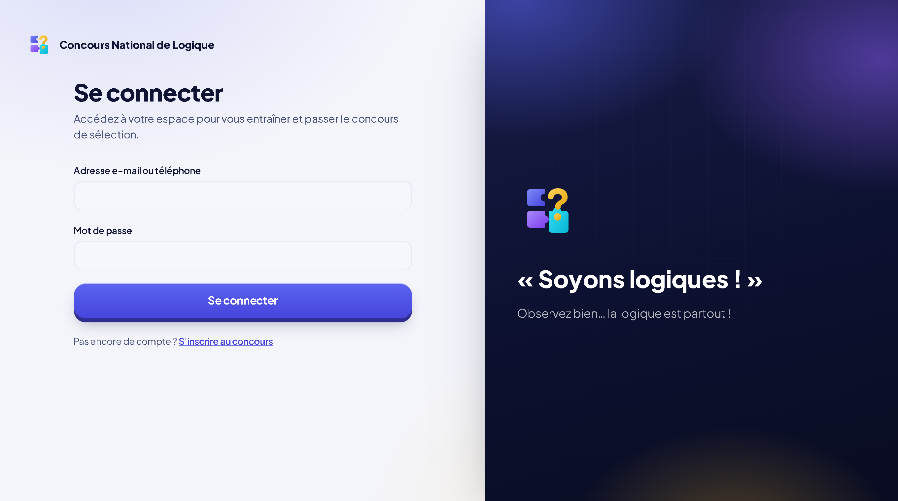
C'est le point de départ après connexion. Deux épreuves y sont proposées, dans deux états bien distincts.
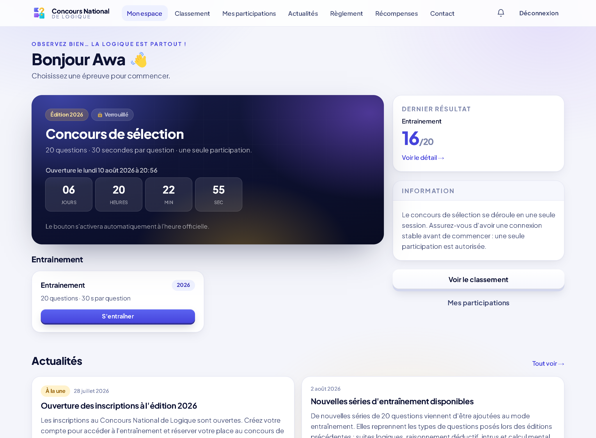
Une seule participation autorisée. Accessible uniquement à l'heure officielle annoncée.
Accessible à tout moment et rejouable autant de fois que vous le souhaitez.
La colonne de droite regroupe vos repères personnels :
Tant que l'heure officielle n'est pas atteinte, le bouton reste verrouillé et un compte à rebours s'affiche. Vous n'avez rien à faire : à l'heure dite, la page se met à jour d'elle-même et le bouton devient actif.
Quel que soit le mode choisi, un écran de consignes s'affiche avant le démarrage. Le chronomètre n'est pas encore lancé : prenez le temps de le lire.
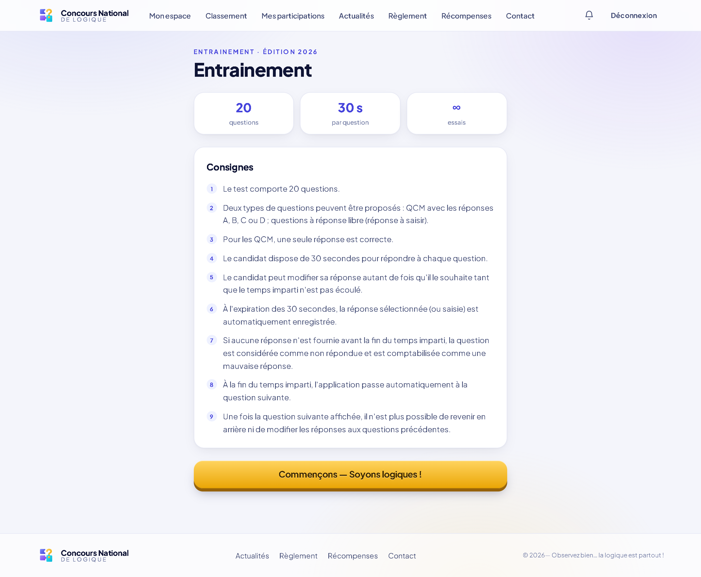
Le chronomètre démarre uniquement lorsque vous cliquez sur Commençons — Soyons logiques !
L'épreuve comporte 20 questions, présentées une par une. Deux formats peuvent apparaître.
Quatre propositions sont affichées, repérées A, B, C et D. Une seule est correcte.
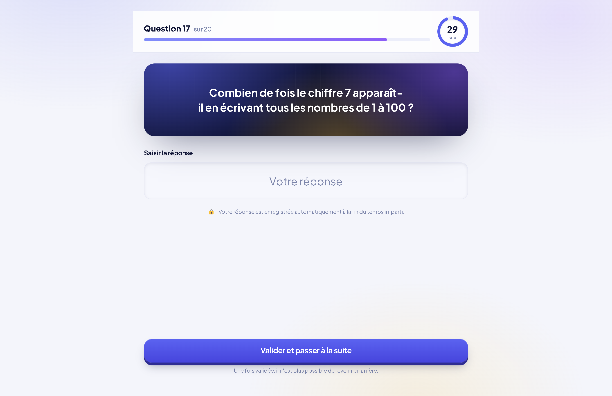
Touchez une proposition pour la sélectionner : elle s'enfonce et se colore, ce qui rend le choix visible d'un coup d'œil.
Aucune proposition n'est affichée : vous saisissez vous-même la réponse.
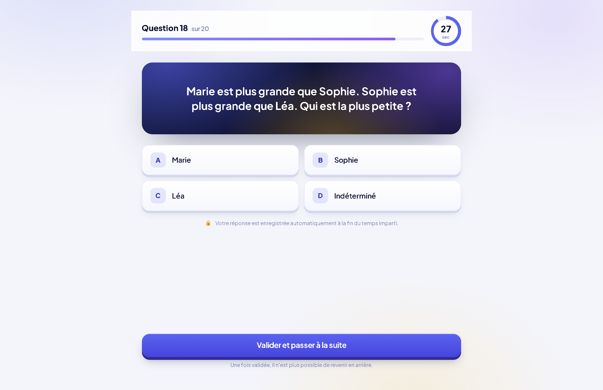
« QUINZE », « Quinze » et « quinze » sont acceptés indifféremment, et les
formes équivalentes prévues par l'organisation le sont aussi — par exemple
15 ou quinze. Répondez simplement, sans phrase.
Ces règles sont identiques en entraînement et en sélection. Elles sont appliquées par le serveur : avancer l'horloge de son téléphone ne donne aucun avantage.
| Situation | Ce qui se passe |
|---|---|
| Vous répondez à temps | La réponse est enregistrée. Vous passez à la suite en cliquant sur Valider. |
| Vous changez d'avis | Autorisé autant de fois que voulu, tant que les 30 secondes ne sont pas écoulées. |
| Le temps s'écoule | La réponse sélectionnée ou saisie est enregistrée automatiquement, puis la question suivante s'affiche. |
| Vous n'avez rien répondu | La question est comptée comme non répondue, donc fausse. |
| Vous fermez l'application | Le chronomètre continue. À votre retour, les questions dont le temps a expiré sont comptées non répondues et vous reprenez à la bonne question. |
| Votre connexion est lente | Une réponse partie juste avant la fin est acceptée : une petite marge de tolérance réseau est prévue. |
Une fois la question suivante affichée, vous ne pouvez plus revenir sur les questions précédentes ni modifier vos réponses. Cette règle vaut pour les deux modes.
À la fin de la vingtième question, l'écran des résultats s'affiche automatiquement.
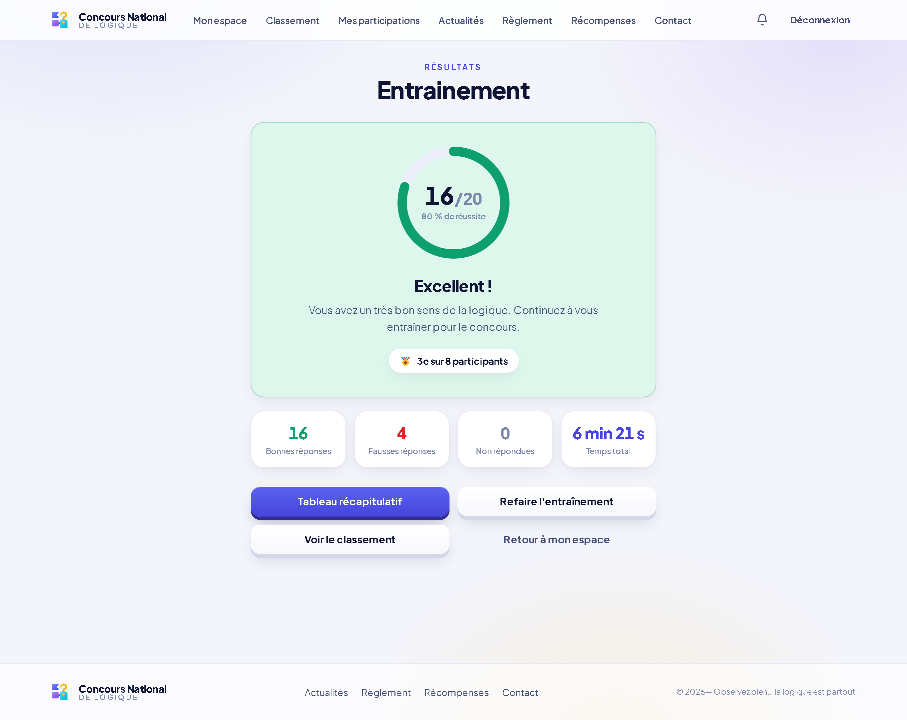
Le message dépend de votre pourcentage de bonnes réponses :
| Résultat | Appréciation affichée |
|---|---|
| Plus de 75 % | Excellent ! Vous avez un très bon sens de la logique. Continuez à vous entraîner pour le concours. |
| De 50 à 74 % | Bon résultat ! Continuez à vous entraîner afin d'améliorer votre score. |
| Moins de 50 % | Continuez vos efforts. Chaque entraînement vous permettra de progresser. |
Quatre compteurs complètent le score :
Depuis les résultats, le bouton Tableau récapitulatif ouvre le détail question par question — l'outil le plus utile pour progresser.
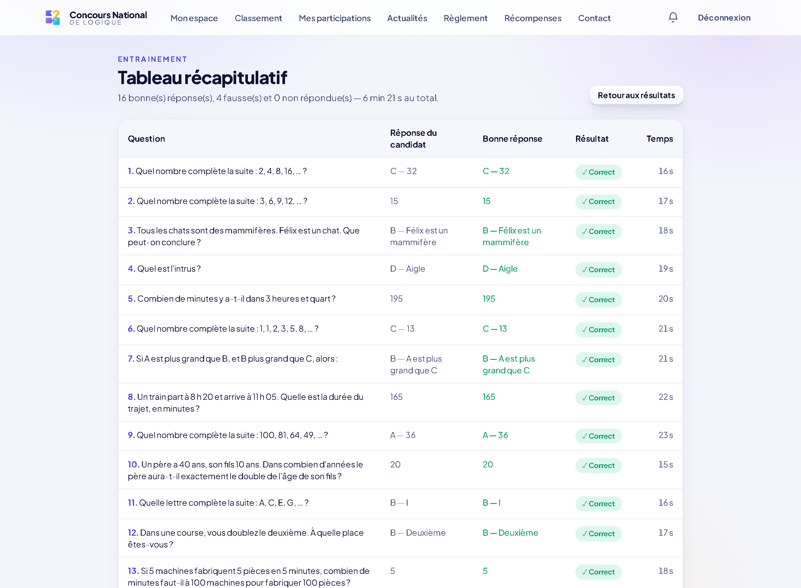
Un tableau à cinq colonnes serait illisible sur un petit écran : l'application le remplace automatiquement par une carte par question, avec les mêmes informations.
Le classement est calculé automatiquement, sans intervention de l'organisation.
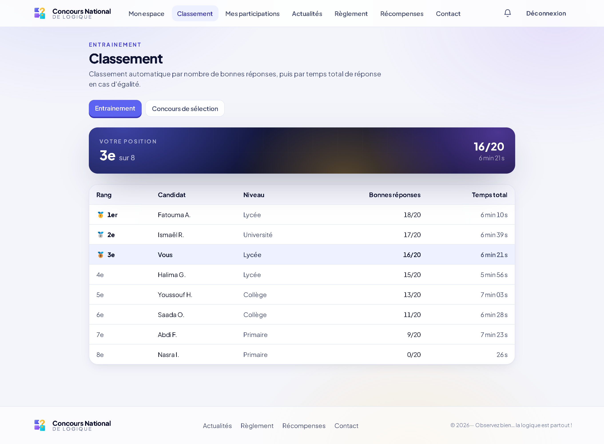
Mes participations conserve l'historique de toutes vos épreuves et permet de reprendre une épreuve interrompue.
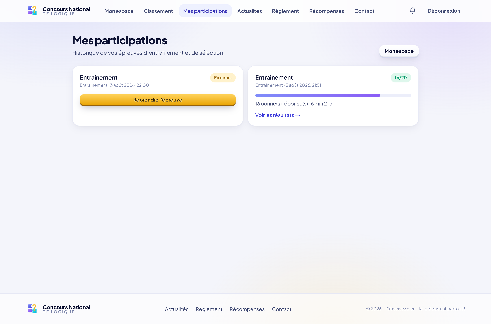
Mes messages rassemble les communications de l'association : rappels de date, résultats officiels, communiqués. La pastille rouge du bandeau indique le nombre de messages non lus.
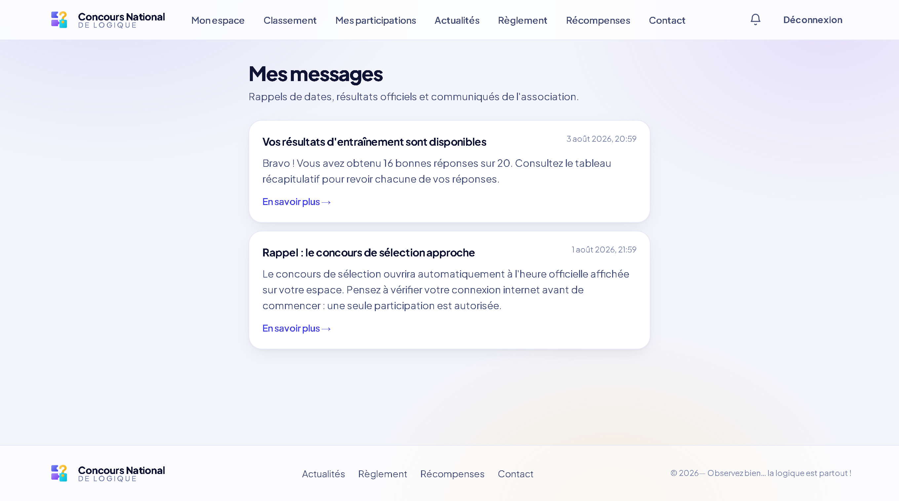
À l'issue du concours de sélection, un certificat nominatif est mis à disposition depuis l'écran des résultats. Le bouton Imprimer / Enregistrer en PDF ouvre la boîte d'impression du navigateur ; les éléments de navigation sont automatiquement retirés de la version imprimée.
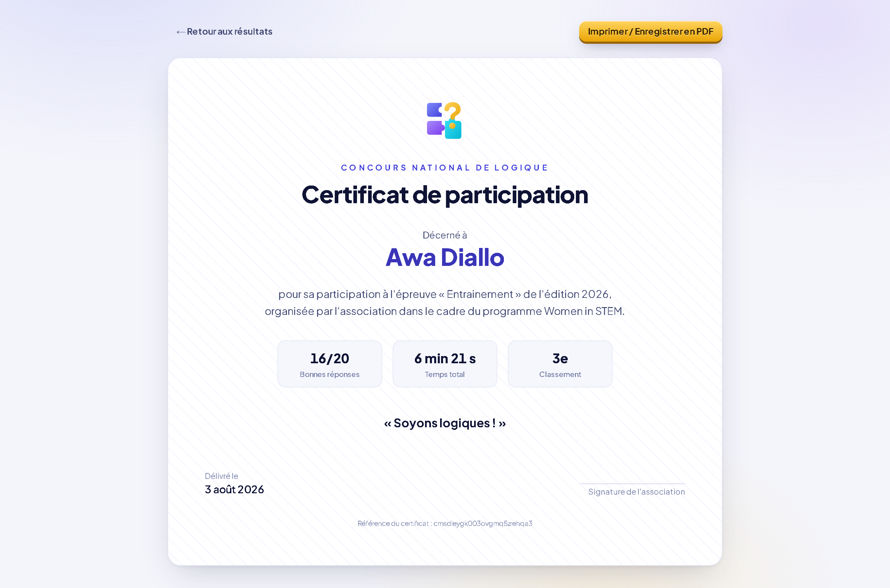
L'application s'adapte à toutes les tailles d'écran. Sur téléphone, la navigation se replie derrière le bouton ☰ et les contenus s'empilent sur une seule colonne.
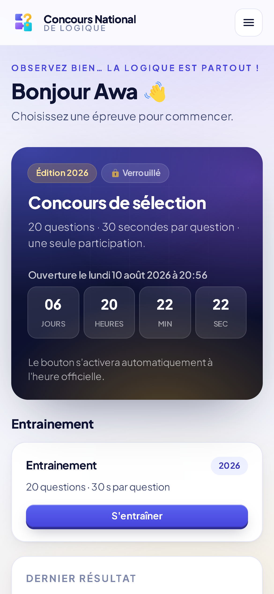
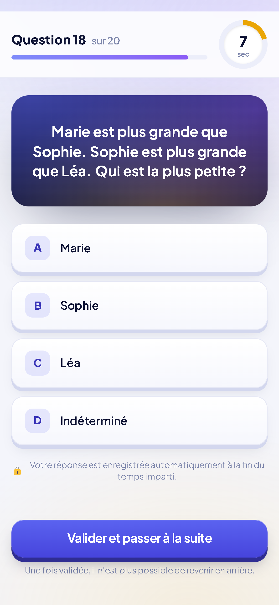
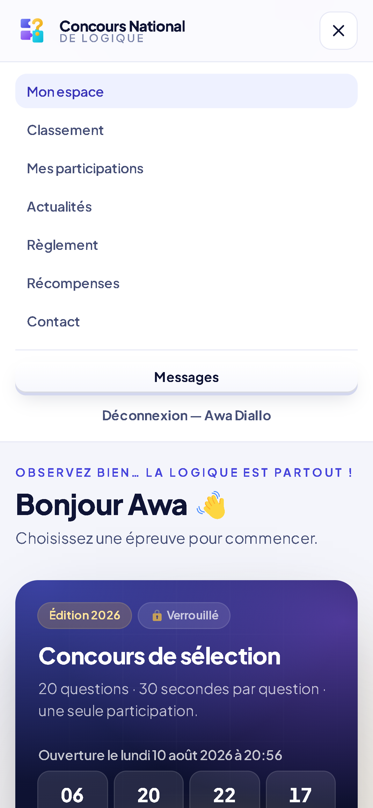
Faites au moins un entraînement complet sur l'appareil que vous utiliserez le jour du concours. Vous vérifierez ainsi votre connexion et vous serez habitué au rythme des 30 secondes.
Piloter les concours, les questions, les candidats et les contenus
Connectez-vous avec un compte administrateur : un bouton Administration apparaît alors dans le bandeau et sur votre espace. L'accès est refusé à tout autre compte.
Le tableau de bord donne en un écran l'état de l'édition en cours. Le menu latéral, présent sur toutes les pages d'administration, regroupe les sections par thème : Pilotage, Concours et Contenus.
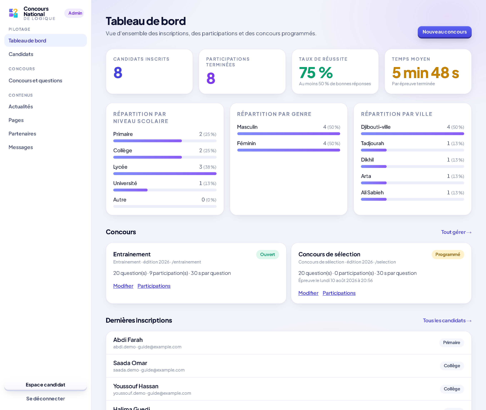
| Indicateur | Signification |
|---|---|
| Candidats inscrits | Nombre total de comptes candidats, comptes administrateurs exclus. |
| Participations terminées | Épreuves menées jusqu'à la dernière question, tous concours confondus. |
| Taux de réussite | Part des participations terminées ayant obtenu au moins 50 % de bonnes réponses. |
| Temps moyen | Durée moyenne d'une épreuve terminée. |
Trois répartitions complètent ces chiffres : par niveau scolaire, par genre et par ville, chacune en nombre et en pourcentage.
La section Candidats liste tous les inscrits, avec recherche, filtres et export.
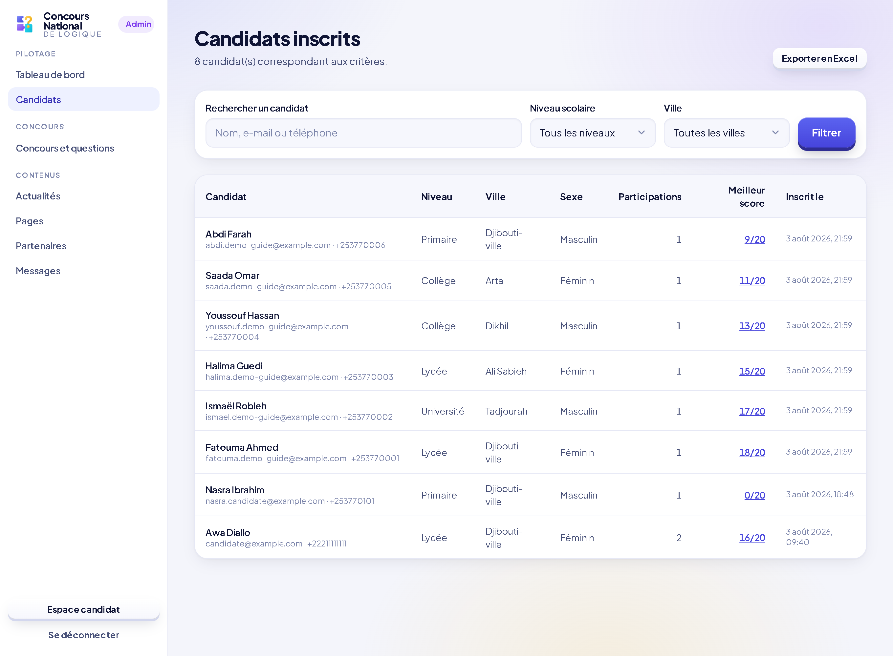
Le meilleur score de chaque candidat est cliquable : il ouvre le détail complet de sa participation, question par question. Le bouton Exporter en Excel produit un classeur de la liste des inscrits.
Un « concours » désigne une épreuve : un entraînement ou une sélection, pour une édition donnée. Plusieurs éditions peuvent coexister.
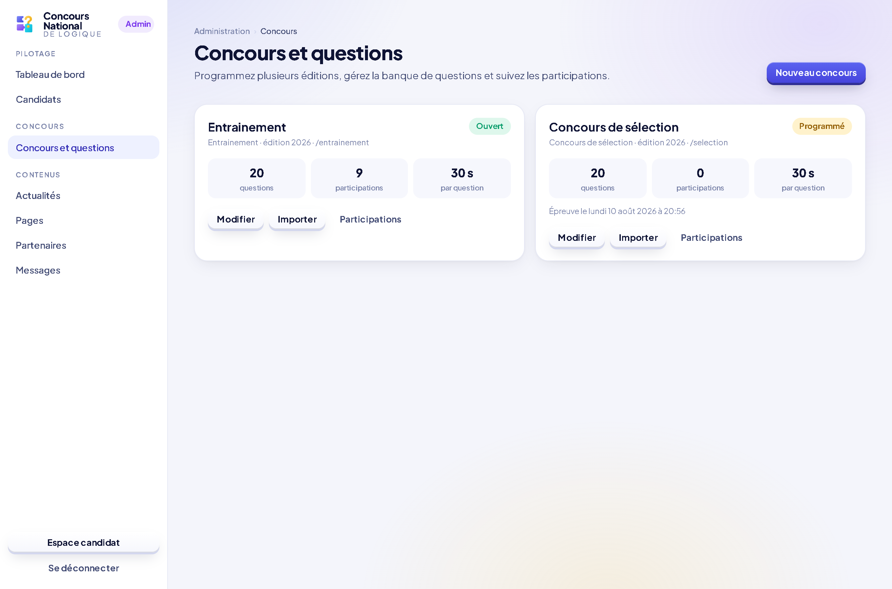
L'étiquette d'état résume la situation du concours :
| Étiquette | Signification |
|---|---|
| Ouvert | Les candidats peuvent passer l'épreuve immédiatement. |
| Programmé | L'heure officielle n'est pas encore atteinte ; le compte à rebours tourne. |
| Sans question | Aucune question n'a encore été saisie : l'épreuve ne peut pas démarrer. |
| Clôturé / Fermé | La date de clôture est passée, ou le concours a été désactivé. |
Ouvrez un concours pour accéder à ses questions. Elles sont numérotées et présentées dans l'ordre où les candidats les verront.
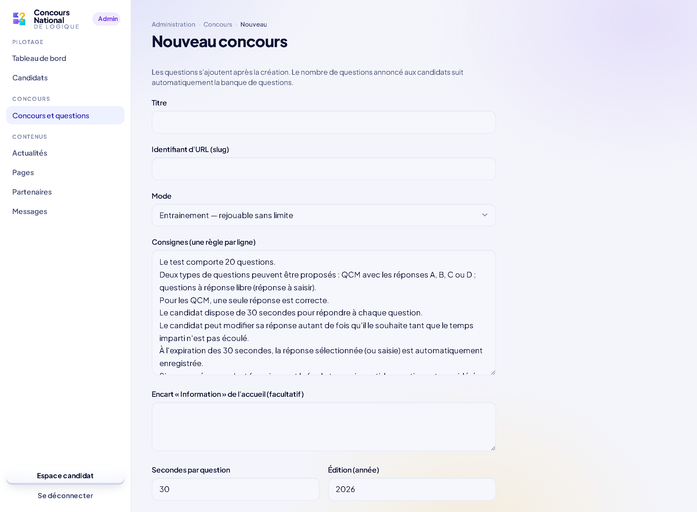
Le formulaire d'une question s'adapte au type choisi :
| Champ | Précisions |
|---|---|
| Énoncé | Le texte lu par le candidat. |
| Type | QCM : quatre propositions, une seule correcte. Réponse libre : le candidat saisit sa réponse. |
| Propositions A à D | Obligatoires pour un QCM ; ignorées pour une réponse libre. |
| Bonne réponse | Une lettre (A–D) pour un QCM. Pour une réponse libre, les formulations acceptées séparées par |. |
| Points | 1 par défaut. Permet de pondérer une question plus difficile. |
| Explication | Note interne, jamais montrée au candidat. |
Saisir 15 | quinze accepte les deux écritures. La casse, les
accents et la ponctuation sont déjà ignorés automatiquement ; seule la première
formulation est montrée au candidat dans son récapitulatif.
Le nombre annoncé aux candidats suit toujours le contenu réel de la banque de questions : il n'y a rien à ressaisir après un ajout ou une suppression.
Sous la banque de questions, la section Paramètres réunit tous les réglages du concours.
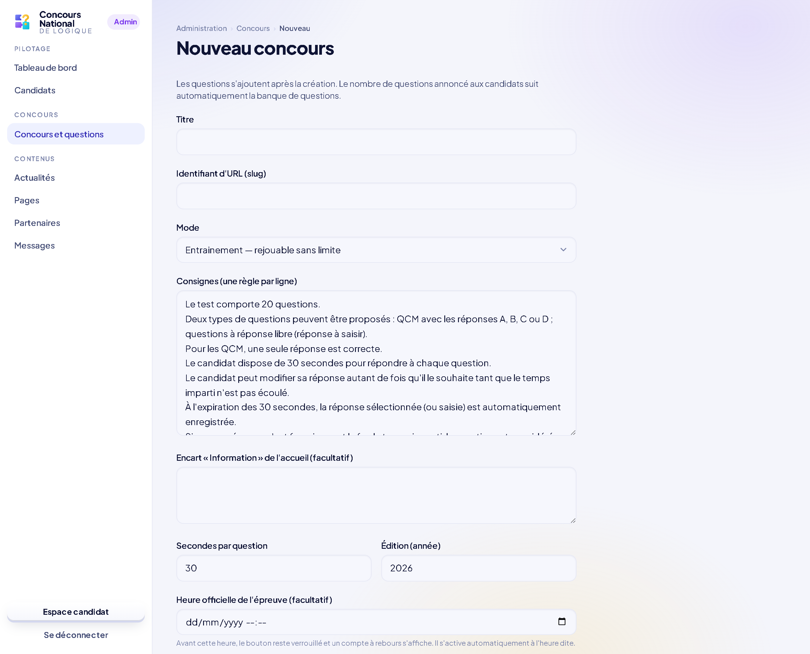
| Réglage | Effet |
|---|---|
| Mode | Entraînement : rejouable sans limite. Sélection : une seule participation par candidat. |
| Consignes | Une règle par ligne ; elles s'affichent numérotées avant l'épreuve. |
| Encart Information | Message affiché sur l'espace candidat. |
| Secondes par question | 30 par défaut, conformément au règlement. |
| Édition | L'année du concours : permet de faire coexister plusieurs éditions. |
| Heure officielle | Verrouille l'épreuve jusqu'à cette date et affiche le compte à rebours aux candidats. |
| Ouverture / Clôture | Bornent la période d'accès à l'épreuve. |
| Concours ouvert | Interrupteur général : décoché, le concours disparaît de l'espace candidat. |
Renseignez l'heure officielle de l'épreuve et laissez le concours ouvert. Les candidats verront le compte à rebours ; à la seconde prévue, leur écran s'actualise et le bouton devient actif, sans aucune manipulation de votre part.
Elle emporte ses questions et toutes les participations enregistrées. Pour éviter tout accident, l'application demande de ressaisir l'identifiant du concours avant de confirmer. Pour simplement fermer l'accès, décochez plutôt « Concours ouvert aux candidats ».
Saisir vingt questions une par une est fastidieux : l'import Excel permet de charger toute une série en une fois.
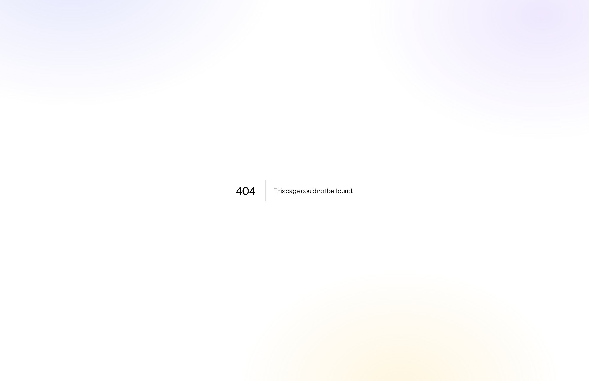
| N° | Colonne | Contenu |
|---|---|---|
| 1 | Type | QCM ou LIBRE |
| 2 | Énoncé | Le texte de la question |
| 3 à 6 | Réponses A à D | Obligatoires pour un QCM, à laisser vides sinon |
| 7 | Bonne réponse | La lettre A–D, ou les formulations acceptées séparées par | |
| 8 | Points | 1 si la case est vide |
Si une seule ligne est invalide, rien n'est enregistré : l'application liste les lignes fautives avec leur numéro et le motif. Corrigez le fichier, puis relancez l'import. Un import à moitié appliqué serait bien plus pénible à rattraper.
Pour chaque concours, l'écran Participations présente le classement officiel, déjà trié.
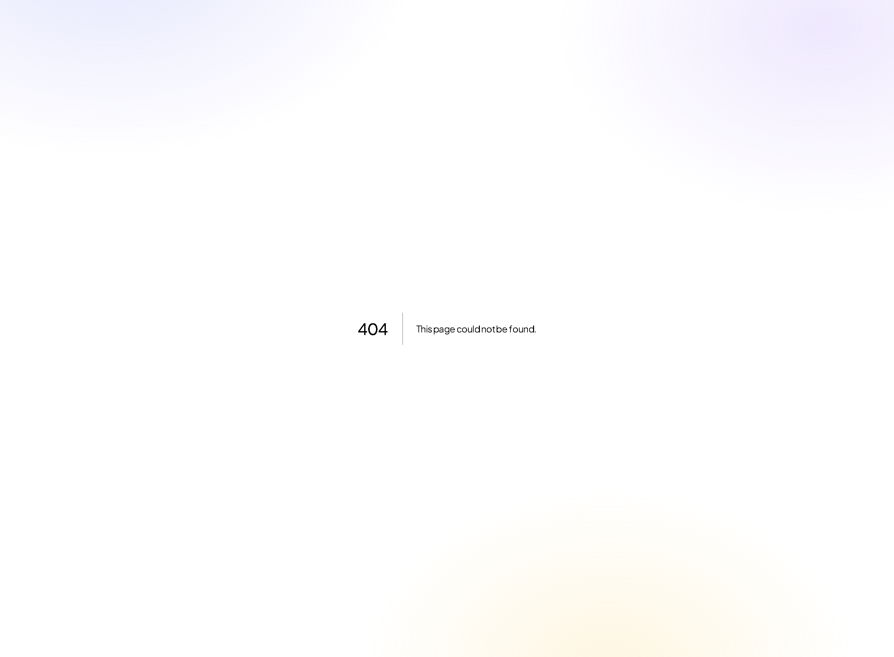
Les épreuves encore en cours sont listées séparément, sous le classement, avec la question atteinte par chaque candidat.
Le bouton Exporter en Excel produit un classeur trié du meilleur au moins bon, contenant les colonnes exigées par le cahier des charges :
L'en-tête est figé et filtrable, les dates et les durées sont de vrais formats Excel : vous pouvez trier, filtrer et calculer des moyennes sans retraitement.
Les actualités alimentent l'onglet public et remontent automatiquement sur la page d'accueil.
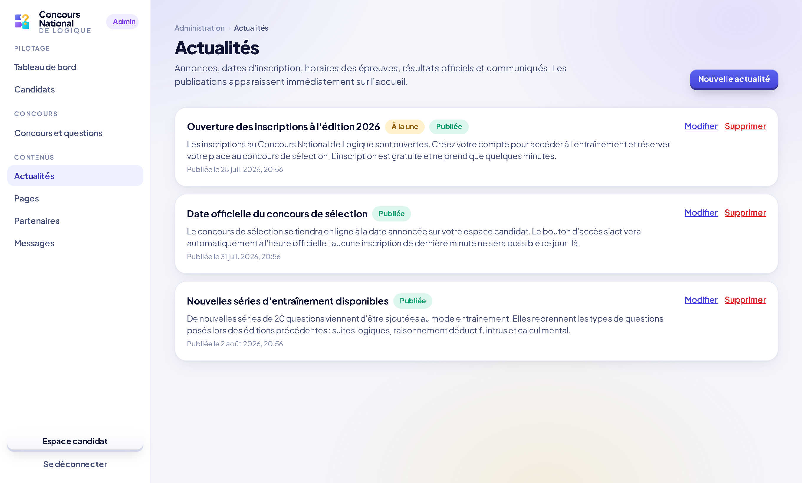
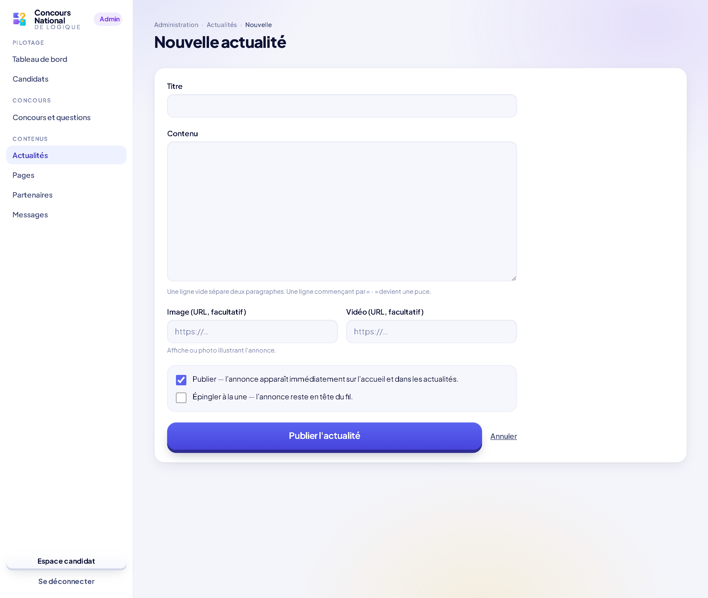
Corriger une annonce déjà publiée ne la fait pas remonter en tête du fil : sa date de première publication est conservée.
Trois pages publiques sont directement éditables : le règlement, le contact et les récompenses.
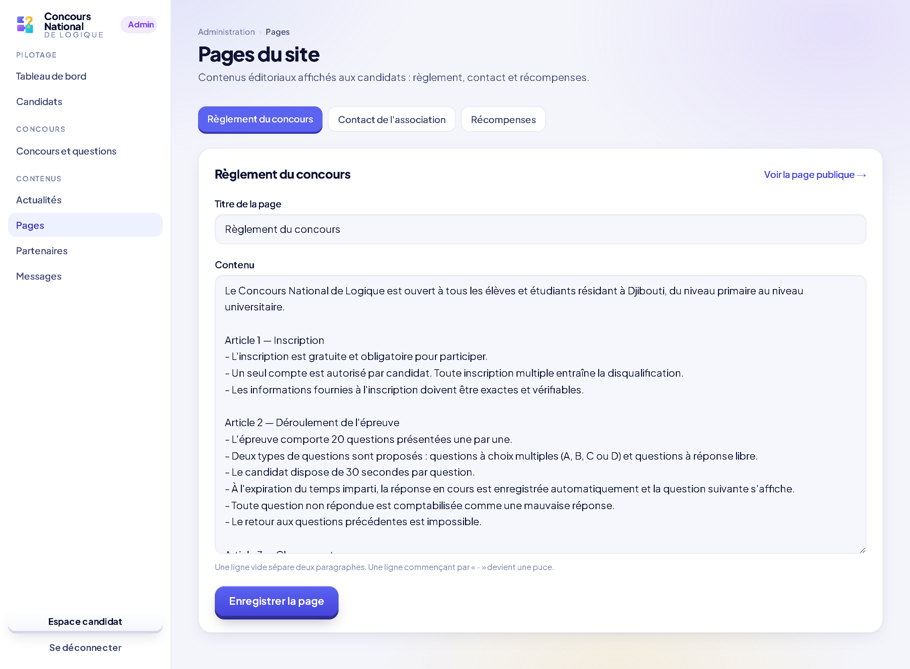
Une ligne vide sépare deux paragraphes ; une ligne commençant par un tiret devient une puce. Aucun code n'est nécessaire.
Les partenaires institutionnels, académiques et financiers s'affichent en bas de la page d'accueil et sur la page de contact.
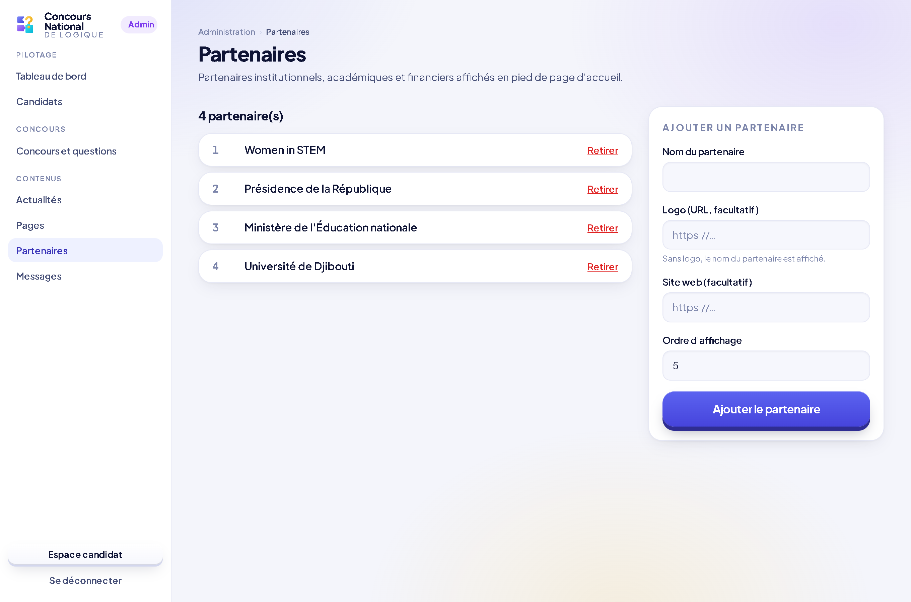
Le champ Ordre d'affichage commande la position dans le bandeau. Sans logo, c'est le nom du partenaire qui est affiché.
Cette section diffuse un message privé dans l'application de chaque destinataire — l'outil idéal pour un rappel avant l'épreuve.
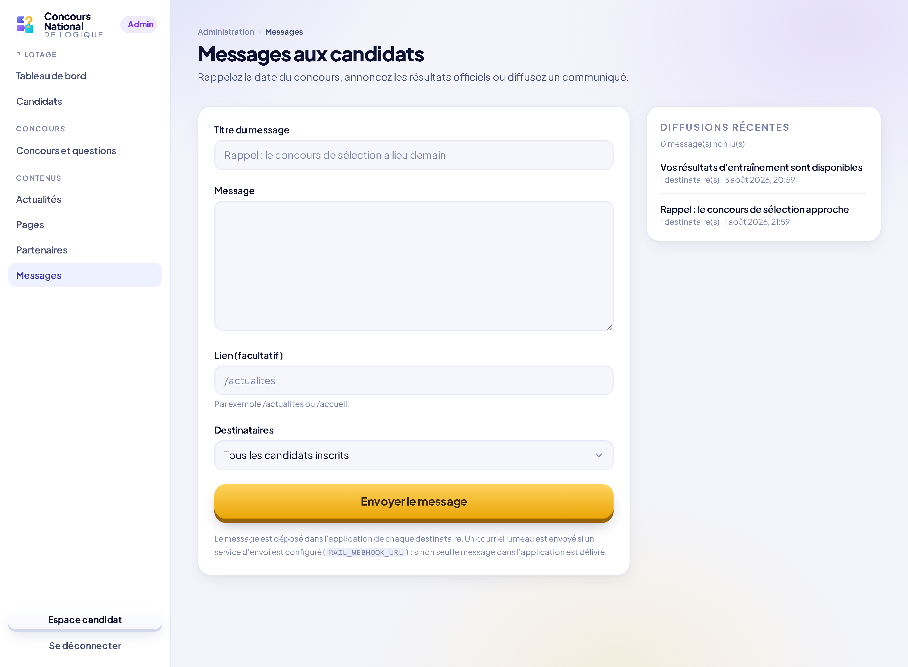
| Public | Destinataires |
|---|---|
| Tous les candidats | L'ensemble des comptes inscrits. |
| N'ont pas encore participé | Ceux qui n'ont pas terminé le concours choisi — idéal pour une relance. |
| Ont terminé | Ceux qui ont achevé le concours choisi — idéal pour annoncer les résultats. |
Le message est toujours déposé dans l'application. Un courriel identique est envoyé en parallèle lorsqu'un service d'envoi a été configuré par l'équipe technique ; dans le cas contraire, seul le message interne est délivré.
Règles de correction, classement et dépannage
| Situation | Que faire |
|---|---|
| « Un compte existe déjà avec cette adresse » | Le compte a déjà été créé. Utilisez la page de connexion plutôt que celle d'inscription. |
| Le bouton du concours reste verrouillé | L'heure officielle n'est pas encore atteinte. Le compte à rebours indique le temps restant ; le bouton s'activera seul. |
| « Vous avez déjà passé le concours de sélection » | Une seule participation est autorisée. L'entraînement, lui, reste accessible sans limite. |
| L'application s'est fermée pendant l'épreuve | Reconnectez-vous et reprenez depuis Mes participations. Les questions dont le temps a expiré entre-temps sont comptées non répondues. |
| Le concours n'apparaît pas chez les candidats | Vérifiez, dans les paramètres, que « Concours ouvert aux candidats » est coché, que la banque de questions n'est pas vide et que la date de clôture n'est pas dépassée. |
| L'import Excel est refusé | Le rapport indique le numéro de chaque ligne fautive et le motif. Repartez du modèle fourni, sans modifier l'ordre des colonnes. |
| Le classement paraît vide | Seules les participations terminées sont classées. Les épreuves en cours apparaissent sous le classement. |
Les coordonnées de l'association figurent sur la page Contact de l'application. Précisez votre nom complet et l'adresse e-mail utilisée à l'inscription pour accélérer le traitement de votre demande.